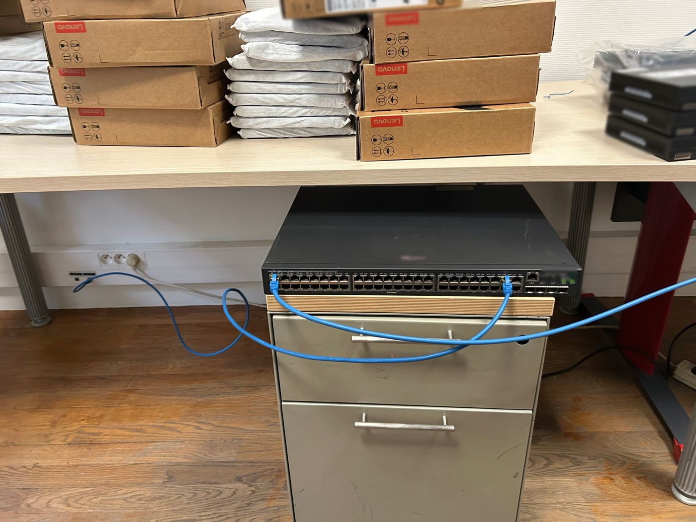
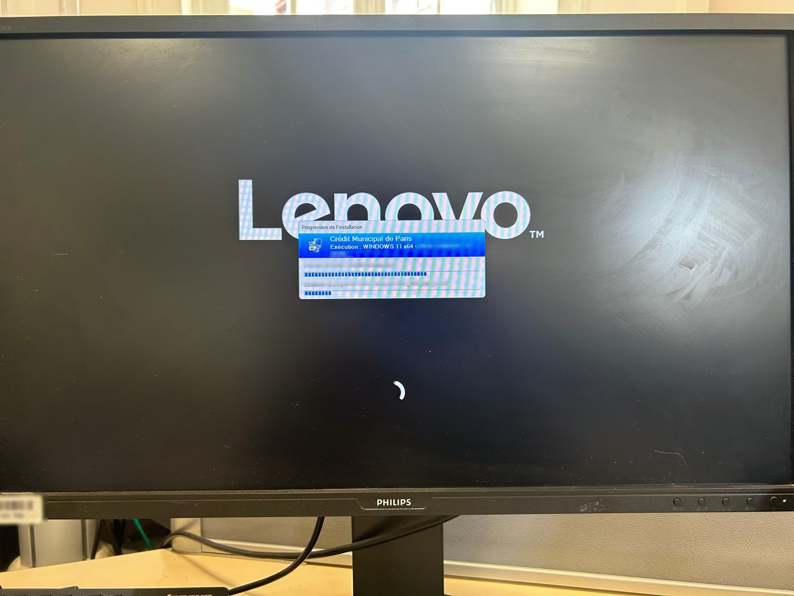
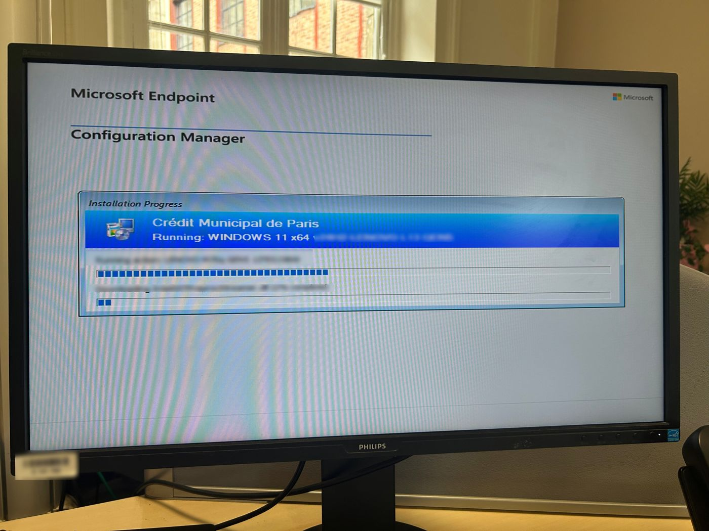

Étape 3 sur 6
Déploiement et mastérisation du parc
Industrialiser l'installation : banc de mastérisation, PXE et image standard.
Prérequis
Mise en conformité du matériel (composants, BIOS) pour éviter les problèmes après la migration.
Objectifs
- Mettre en place un banc de mastérisation.
- Utiliser une séquence de tâches avec une image « Master » Windows 11 standardisée.
- Sécuriser les postes immédiatement avant leur livraison.
Démarche
- Préparation SCCM : les nouvelles machines sont injectées dans l'environnement SCCM avec leur adresse MAC et leur identifiant unique.
- Ciblage : les administrateurs ajoutent les postes à mastériser dans un regroupement SCCM dédié. Cette action autorise le poste à recevoir l'image au démarrage PXE.
- Préparation BIOS : mot de passe sécurisé, date, pile PXE IPv4 activée, IPv6 désactivée, démarrage prioritaire en PXE.
- Banc : un switch préconfiguré par l'administrateur réseau est branché sur une prise réseau repérée et brassée à l'avance, ce qui permet de déployer plusieurs postes en parallèle.
- Connexion : les portables, sans port RJ45, passent par des stations d'accueil pour le démarrage réseau.
- Application de l'image : le poste démarre en PXE, le serveur le détecte et installe Windows 11, la suite bureautique et l'antivirus.
- Finalisation : mises à jour Windows et Chrome lancées manuellement, puis retrait des postes du regroupement SCCM.
Défis et solutions
- Lenteurs réseau : les déploiements simultanés saturaient la prise réseau, d'où des déploiements par vagues.
- Erreur 0x000102 : certains postes refusaient la mastérisation. Diagnostic d'une stratégie SCCM corrompue. Les postes ont été retirés du regroupement, la stratégie actualisée, puis les postes ajoutés de nouveau.
- Antivirus : sur quelques machines, désenrôlement puis réenrôlement manuel pour forcer la synchronisation.
Résultat
Postes préparés, standardisés et sécurisés sous Windows 11, antivirus à jour et vulnérabilités corrigées.
Captures




Savoir-faire mobilisés
- Contrôle qualité
- Organisation de la mastérisation
- Déploiement PXE / SCCM